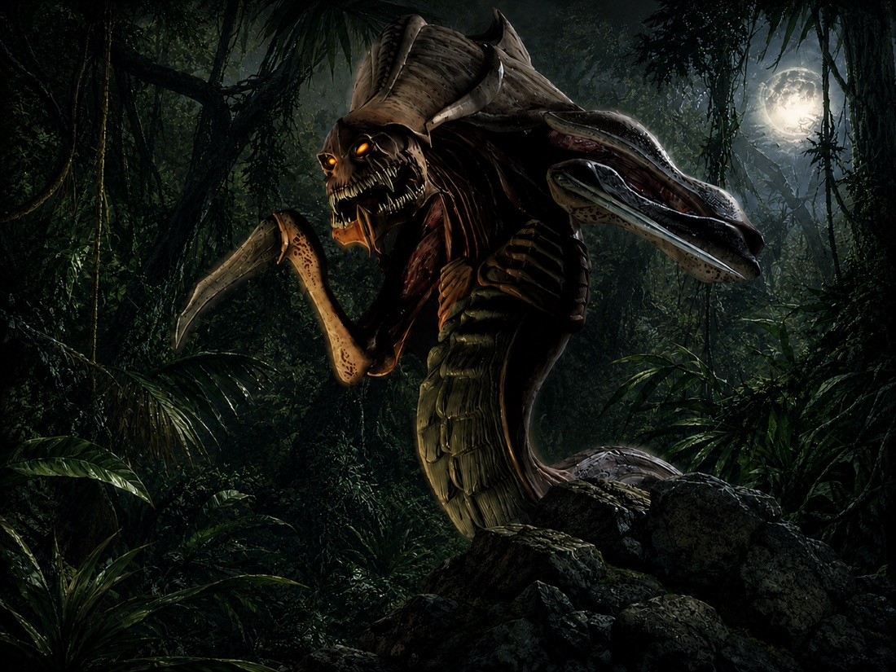

Morning: Scout & Harvest
Survey the sector, gather supplies, and select defensible ground.
StarCraft co-op survival map
Command a Ghost detachment through five nights of jungle contact. Scout by day, hold by night, and relocate before the swarm closes in.
What you play
This is not a standard base operation. Each commando must decide when to advance, when to hold, and when to abandon a failing position.
Color reports the current threat grade.
How the map works
Prepare while conditions allow. When the jungle pushes back, hold only as long as the position remains useful.
Core loop
Each phase lasts 22 minutes. Day favors reconnaissance; night favors the swarm.


Survey the sector, gather supplies, and select defensible ground.
Prepare weapons, transfer supplies, and establish a temporary outpost.
Hold the ground or withdraw before darkness gives the enemy the advantage.
Enemy movement intensifies. Light placement and disciplined fire become critical.
Scavenging
Field resources produce different mineral and vespene yields.
Zerg threat ladder
Enemy strains advance as the operation continues. Color indicates threat grade: Black → Brown → Orange → Red.
Apex threat
Not every contact belongs to the common brood ladder. Commanders should expect heavier resistance near the end of the operation.

Unidentified Contact
Some contacts do not match known Zerg behavior. They move through the canopy without revealing whether they are hunting the squad, observing the swarm, or waiting for the battlefield to weaken.

Commando progression
Each commando advances independently. Training persists; failed engagements still cost equipment.
Design notes
Development notes for field commands, weapon passives, and experimental systems.
Hotbar focus
Heal, Speed, and Stun remain deliberate commands. Weapon training carries most specialization.
EPS system map
`main.eps` stays orchestration-only: it initializes every system, then each frame updates the survival loop, resource economy, critter hunts, combat, structures, mobs, and victory state.
Loading source index…